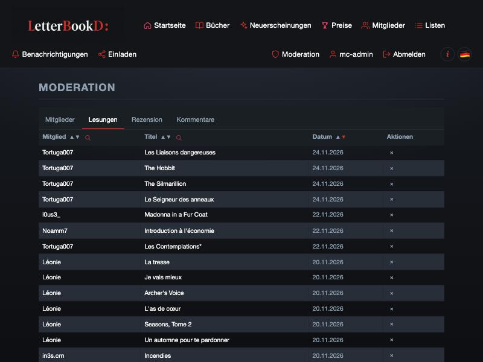

Moderation — Lesevorgänge Nur Admin
Wozu es dient: Jeden Lesevorgang (Mitglied × Buch) des Clubs auflisten. Ermöglicht es, einen Lesevorgang zu löschen, wenn er doppelt, offensichtlich falsch oder abgebrochen ist.

Ablauf
Tabelle: Mitglied (Name), Titel (Buch), Datum (wann der Lesevorgang erfasst wurde) und Aktionen (Kreuz zum Löschen). Es gelten dieselben Sortier- und Filtermechanismen wie im Reiter Mitglieder.
Das Löschen eines Lesevorgangs entfernt auch die daran hängende Rezension, nicht aber die Kommentare anderer Mitglieder zu dieser Rezension. Diese werden zu verwaisten Kommentaren, die im Reiter Kommentare bearbeitet werden müssen.
Aktionsketten
Jede Zeile beschreibt einen Auslöser in der Oberfläche, das sich öffnende Modal/Formular und den erzielten Effekt.
| Auslöser | Modal / Felder | Effekt |
|---|---|---|
| Sortier-/Filtersymbole | — | Gleiche Mechanik wie im Reiter Mitglieder. |
| Kreuz-Schaltfläche (×) in einer Zeile | Bestätigendes POST-Formular. | Löscht den Lesevorgang UND die daran hängende Rezension. Die Kommentare bleiben bestehen, verweisen dann aber auf eine gelöschte Rezension. |